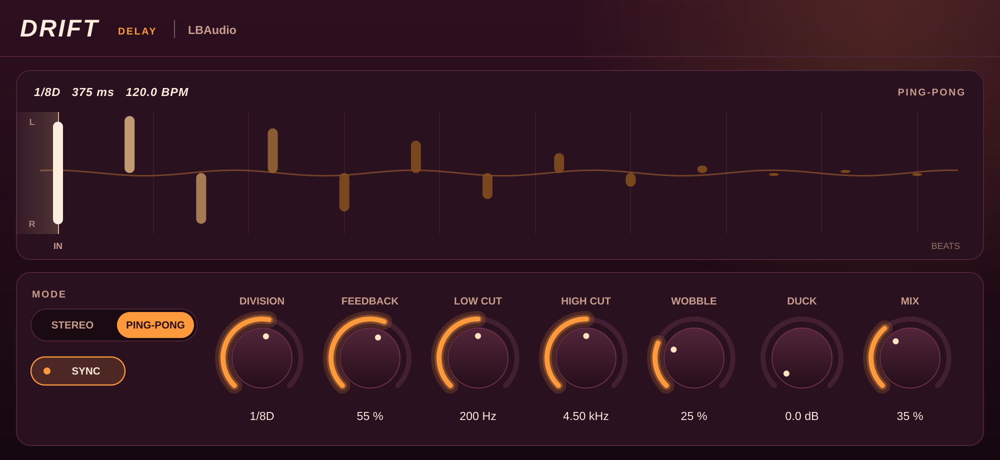

Delay plugin · VST3 & AU
Driftby LBAudio
Warm, tape-style echoes that lock to your tempo, bounce from side to side and duck under the vocal, with every repeat drawn on screen.
Instant download. Any local VAT is worked out at checkout. See all LBAudio plugins.
- VST3
- AU
- Windows
- macOS
- Linux
- Tempo sync

Hear it on a real track
A beat by LBAudio, run through Drift at three settings. Each version is matched to the original's loudness, so you hear the echoes, not a change in volume. Flip between them while it plays.
One short, bright repeat that thickens the hits without sounding like an echo.
Watch it work
The real plugin on screen, on one of our tracks. Every before-and-after is matched in loudness, so you hear what Drift does, not a change in volume.
Echoes you can see
The display draws every repeat as it fades, bouncing left and right on a beat grid, so you can see the rhythm before you hear it.
Locks to your tempo
Pick a note value from 1/32 to a whole bar, including dotted and triplet notes, or switch Sync off and set the time in milliseconds.
Gets out of the way
Duck pulls the echoes down while the vocal or lead is playing and lets them bloom in the gaps, with no automation.
Tape character
The filters sit inside the feedback loop, so each repeat is darker and thinner than the last. Wobble adds a tape machine's wow and flutter.
The controls
Ten controls. Double-click any knob to reset it, or click a value and type one in.
| Control | Range | What it does |
|---|---|---|
| Sync | On / off | Locks the echoes to your DAW's tempo. With no tempo to follow, Drift uses 120 BPM. |
| Division | 1/32 to 1/1 | The length of each repeat when Sync is on, including dotted (D) and triplet (T) notes. |
| Time | 1 ms to 2 s | The delay time when Sync is off. |
| Feedback | 0 to 95 % | How much of each echo is fed back to make the next one: more feedback, more repeats. |
| Mode | Stereo / Ping-pong | Stereo keeps each side's echoes on that side. Ping-pong bounces every repeat from one side to the other. |
| Low cut | 20 Hz to 2 kHz | Thins the repeats. It sits in the feedback loop, so every echo loses a little more low end. |
| High cut | 1 to 20 kHz | Darkens the repeats, one echo at a time, like an old tape delay. |
| Wobble | 0 to 100 % | Slow wow and fast flutter in the delay time, like a tape machine. |
| Duck | 0 to 24 dB | How far the echoes are turned down while the input is playing. They come back up in the gaps. |
| Mix | 0 to 100 % | The balance of dry signal and echoes. Use 100 % on an effects return. |
Where to start
Four starting points. Set these, then adjust by ear.
-
Vocal slapback
Sync off · time 90–130 ms · feedback 0–10 % · mix 15–25 %
One quick repeat that thickens a vocal without sounding like an echo.
-
Dotted-eighth bounce
1/8D · ping-pong · feedback 35–45 % · duck 6–10 dB
The classic rhythmic echo, kept out of the vocal's way by Duck.
-
Dub throw
1/4 · feedback 65–80 % · high cut 2–3 kHz · wobble 40 %+
Turn Mix up on a single word and let the repeats build and wash out.
-
Lo-fi tape echo
1/8 · feedback 50 % · low cut 400 Hz · high cut 2.5 kHz · wobble 70 %
Small, warbly repeats for keys and guitars.
Specs
One download for each system. No iLok, no account and no activation.
- Formats
- VST3 on Windows, macOS and Linux. Audio Unit (AU) on macOS.
- Windows
- Windows 10 or later, 64-bit.
- macOS
- macOS 10.13 or later. Runs natively on Apple Silicon and Intel.
- Linux
- 64-bit x86 (x86-64).
- Hosts
- Any DAW that loads VST3 or AU plugins, such as Ableton Live, FL Studio, Cubase, Reaper, Studio One, Bitwig and Logic Pro. Not available for Pro Tools (AAX).
- Latency
- None: zero samples.
- Delay time
- 1 ms to 2 s free, or synced from 1/32 to a whole bar (up to 4 s at slow tempos).
- Modes
- Stereo and Ping-pong.
- Channels
- Mono or stereo. Ping-pong bounces across a stereo track.
Questions
Anything else? Email support@lbaudio.co.uk.
How do I install it?
Unzip the download and copy Drift.vst3 into your VST3 folder: C:\Program Files\Common Files\VST3 on Windows or ~/Library/Audio/Plug-Ins/VST3 on a Mac. Logic users also copy Drift.component into ~/Library/Audio/Plug-Ins/Components. Then rescan plugins in your DAW. The zip includes these steps in INSTALL.txt.
How many computers can I use it on?
All the computers you personally own or use. See the licence agreement for the details.
Can I use it on commercial releases?
Yes. The music you make with Drift is entirely yours, with no royalties or credits owed.
Do updates cost anything?
No. Updates to Drift version 1 are free for everyone who bought it.
What if it doesn't work on my system?
Get in touch within 14 days of buying. If we can't get it working, you get a full refund. See the refund policy.
Does it work in Pro Tools?
Not yet. Pro Tools only loads AAX plugins, and Drift is VST3 and AU.
Does it follow tempo changes?
Yes. With Sync on, Drift reads the tempo from your DAW as it plays, so the echoes stay in time.
Drift
VST3 & AU for Windows, macOS and Linux. Instant download. See all LBAudio plugins.